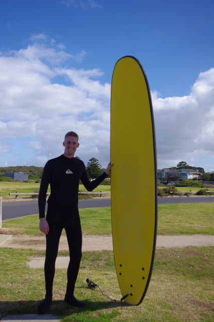

Student Experiences Abroad
Mikaela Larkin is an undergraduate physics major at Oberlin College in Oberlin, Ohio. She is currently studying with Dan Stinebring, and is involved in our work with NANOGrav.
Q: What country are you staying in?
A: Australia, in Sandy Bay (a suburb of Hobart, the capital city of Tasmania)
Q: What university are you attending?
A: University of Tasmania
Q: How long have you been there/will you be there?
A: I was abroad for five months.
Q: What sort of research are you doing?
A: I took a normal course load with two physics classes, including a third year electromagnetism class and an experimental astrophysics class. I went with the intention of doing research, but there was a problem with the telescope.
Q: Did being abroad influence the kind of research you’re doing?
A: Experimental astrophysics was not offered at Oberlin. Because I studied at the University of Tasmania, I was able to gain experience using two telescopes, one radio and one optical, for different projects.
Q: What’s the coolest thing about being abroad?
A: The Tasmanians call it ‘bushwhacking,’ but Americans would call it hiking. I did a ton of it. Every weekend, I would be on a bushwhacking trip. I got to see almost the entire state.
Q: What’s your favorite new phrase from the language?
A: “I can’t be bothered/stuffed.” It means “screw that.” I often used it to describe my feelings for tedious assignments.
Q: What’s the hardest thing about being abroad?
A: It was really expensive, and it was really hard to be away from friends and home. Culturally, it wasn’t too different from the US. The lectures and exams we took were a different format from home, so that was also hard to get used to.
Q: What did you do in your free time?
A: I took an Aboriginal studies class, which was super interesting. I also studied, did physics, and took observations.
Q: What’s the coolest thing you’ve seen or done while abroad?
A: There was an amazing market in Hobart. They sold everything like food, produce, clothes, souvenirs. I really felt like it was a much healthier place. Even the air seemed cleaner at the market, and it felt pure.
Q: What’s the weirdest thing you’ve seen or done while abroad?
A: I don’t understand people’s obsession with Vegemite. They put it on everything and eat it by the spoonful. It’s disgusting.
Q: What advice would you offer others going abroad?
A: No matter where you go, be very proactive about putting yourself out there and doing things. It’s easy to do the normal things. It’s a lot harder to make an effort to get out of your comfort zone. Do something that scares you everyday.
Q: What skills have you learned abroad?
A: I learned early on to approach strangers with higher authority like professors. It was hard in a place where I don’t know people very well and needed to ask for help. I’m pretty independent, but being in Tasmania meant I got a lot better at paying bills and managing a household. I lived in house with six people. Two were from France, one was from Denmark, one was from India, one was from Malaysia, and another from the US. None of them spoke English well, so my communication skills are super now.
Q: Is there anything you’d do differently or anything you wish you’d have known?
A: I feel like I did what I wanted to do. I wish that I would have spent less time worrying about work. I had a lot of work, and I came abroad wanting to travel and explore. The workload with the cultural experience was a lot at once. I would get upset if I was in the library all day because I felt like it was something I could do at home. In the end, after everything, I’m really proud of what I did accomplish there. I did four pretty major, substantial projects. I feel like I did a really good job as well as taking advantage of being in another country in another hemisphere on the opposite side of the world.
Gary Marchiny
 is an undergraduate physics and mathematics major at West Virginia University. During his time at WVU he as actively participated in pulsar research under the guidance of Dr. Maura McLaughlin. Gary was first introduced to the field of pulsar astrophysics when he participated in the Pulsar Search Collaboratory as a High School student. He has had the opportunity to travel to Australia for the International Pulsar Timing Array conference as well as to study abroad at the University of Manchester.
is an undergraduate physics and mathematics major at West Virginia University. During his time at WVU he as actively participated in pulsar research under the guidance of Dr. Maura McLaughlin. Gary was first introduced to the field of pulsar astrophysics when he participated in the Pulsar Search Collaboratory as a High School student. He has had the opportunity to travel to Australia for the International Pulsar Timing Array conference as well as to study abroad at the University of Manchester.
Q: What country are you staying in?
A: I studied abroad in England.
Q: What university are you attending?
A: While in England, I attended the University of Manchester.
Q: How long have you been there/will you be there?
A: I stayed at Manchester for a semester (from September 2012 to December 2012)
Q: What sort of research are you doing?
A: My research involved investigating high-energy transient radio bursts originating from outside of our galaxy. I created an algorithm that searches large amounts of pulsar observation data for the presence of these short- lasting transient bursts.
Q: Did being abroad influence the kind of research you’re doing?
A: Being abroad allowed me to diverge from the pulsar-related work I had been conducting as undergraduate. I instead was able to investigate an aspect of gravitational wave detection, namely the events that could create such gravitation waves.
Q: What’s the coolest thing about being abroad?
A: Probably the coolest thing about being abroad was experiencing a new culture, teaching style and research environment all in the same semester.
Q: What’s your favorite new phrase from the language?
A: When I arrived in Manchester, a few weeks had passed before I was finally able to regularly use the British phrase “cheers” instead of “thank you.” The other phrase I adapted to using was “Alright there?” This phrase, which is roughly equivalent to “Hey, how are you?”, caused me a bit of head- scratching during my first week.
Q: What’s the hardest thing about being abroad?
A: The most difficult aspect of studying abroad is adapting to a different culture all by yourself. It was rather frightening to me until I began socializing on a regular basis.
Q: What did you do in your free time?
A: Other than working on my research, I often roamed around Manchester looking for parks and interesting buildings like museums. Manchester has a number of educating and entertaining museums.
Q: What’s the coolest thing you’ve seen or done while abroad?
A: Although enjoying the night life and live music was really fun, the coolest thing I’ve done during my study abroad trip was working with some of the most respected scientists in the world on a project that was very new and unique. Every day had the potential of an exciting discovery!
Q: What’s the weirdest thing you’ve seen or done while abroad?
A: Often when I told people that I am from West Virginia University, they would respond by singing the first few verses of John Denver’s “Country Roads” song. I was rather surprised that so many people were so familiar with our state’s song!
Q: What advice would you offer others going abroad?
A: To a fellow student who has decided to go abroad for a semester or a year, I would suggest that they talk to as many people as they can when they arrive at their new home. Doing so helps to both reduce the anxiety of being on your own and allows you to become more culturally aware. Don’t be afraid to try new things!
Q: What skills have you learned abroad?
A: The most important skill I learned while abroad was how to more effectively communicate my ideas, not only in an academic environment, but also in everyday interactions.
Q: Is there anything you’d do differently or anything you wish you’d have known?
A: I would have liked to pursue this research abroad experience during my junior year rather than my senior year. The semester start and end dates in European countries are often different than those in the United States. Thus, as a senior, I was only able to stay for a semester.
Joe Swiggum  is a 3rd year graduate student at WVU, currently working on population synthesis with the PALFA precursor (P1944) survey. During his time at Swinburne University this last summer he became interested in looking for transient effects in millisecond pulsars and investigating how they might affect timing precision in pulsars used for gravitational wave detection. He hopes to explore this further when he resumes processing/analyzing old NANOGrav timing data collected with the WAPPs at Arecibo.
Over the past 3 years, he has also been heavily involved in the Pulsar Search Collaboratory (PSC), an outreach program that aims to involve middle/high school students and teachers in pulsar searching in order to promote interest in STEM-related fields. I has helped to lead summer workshops, done followup observations and timed pulsars discovered by students.
Q: What country are you staying in?
A: Australia.
Q: What university are you attending?
A: Swinburne University (in Melbourne)
Q: How long have you been there/will you be there?
A: 6 weeks
Q: What sort of research are you doing?
A: I studied scintillation patterns for PTA pulsars by constructing signal to noise histograms using short integration times. I used these histograms, in addition to the real-time transient detector Heimdall, to look for giant pulse behavior in MSPs.
Q: Did being abroad influence the kind of research you’re doing?
A: Yes!
Q: What’s the coolest thing about being abroad?
A: In general -- the public transportation system was amazing.
Q: What’s your favorite new phrase from the language?
A: Cheers!
Q: What’s the hardest thing about being abroad?
A: Living out of a suitcase for months gets tiring quickly. I found it a lot easier once I started making friends and feeling more at home in Australia.
Q: What did you do in your free time?
A: Went to coffee shops, explored the downtown area, met some penguins, went surfing, went to comedy clubs, tried new restaurants, watched LOTS of footy, played volleyball and hung out with friends.
Q: What’s the coolest thing you’ve seen or done while abroad?
A: Going surfing all day at a beach right at the start of the Great Ocean Road was probably the best time I had all trip. It was sunny with moderately-sized waves, which made for a very nice first experience. After 6 hours of surfing, we went to a nearby fish and chips restaurant and ordered the 'Deluxe Family Size' meal; fried fish has never tasted so good! I also quite enjoyed having the night shift for several days' observing at Parkes; watching the sun rise, the morning fog lifting and kangaroos stampeding around the grounds is an image I will never forget.
Q: What’s the weirdest thing you’ve seen or done while abroad?
A: The plane I took from Sydney to Parkes was probably the smallest plane I've ever flown in. On the day of departure, the flight was delayed due to WIND -- apparently some of the strongest they'd ever had. When we got bussed out to the plane, it had been strapped to the tarmac, but was still bucking with every gust, so much that its front wheel would lift several feet off the ground. Boarding has never been such a thrilling activity.
Q: What advice would you offer others going abroad?
A: Planning a place to stay for several months is difficult. First of all, apartments typically turn over on a month to month basis, so it's hard to plan anything in advance and second, landlords don't usually like to rent for such a short timecol-sm-, unless there are special circumstances. Get in touch with people who live where you're going (grad students, etc.) and ask for advice on where to live and/or if they know anyone going abroad who might need a sublease. Making arrangements with strangers by phone/email can work, but a certain amount of trust must be established in order for them to actually hold an apartment (I had a landlord back out on very short notice and had to find another apartment in less than a week). Also look into university housing options and talk to administrators for more advice
Q: What skills have you learned abroad?
A: Socket programming, networking with PPTA folks, python scripting, observing experience at Parkes.
Q: Is there anything you’d do differently or anything you wish you’d have known?
A: I wish I had started surfing earlier! My first time was pretty late in the trip, so I didn't have time to go back out.
Fernando Cardoso is a Graduate Student at West Virginia University.
Q: What country are you staying in?
A: Canada
Q: What university are you attending?
A: McGill University, Montreal Canada
Q: How long have you been there/will you be there?
A: Three months
Q: What sort of research are you doing?
A: I worked on compiling a list of known pulsars re-detected by the PALFA survey in preparation for the upcoming proposal. Additionally, I timed a few newly discovered PALFA pulsars.
Q: What’s the coolest thing about being abroad?
A: The coolest thing was definitely the culture. Even though I was in Canada (and expected most things to be similar to the US), I experienced quite a culture shock. This is not only true because Montreal is a large city, but because it is a mesh of English and French/European culture.
Q: What’s the hardest thing about being abroad?
A: The hardest thing was not being able to speak French. While most people you meet are bilingual, they do prefer to speak in their native language. Ordering food from a French menu is not too straightforward either.
Q: What did you do in your free time?
A: I played volleyball in public parks and took advantage of the art/culture events Montreal had to offer (e.g. Jazz Festival, F1 Festival, theater, musical performances, museums,restaurants). I also got a chance to work with McGill's astronomy outreach program, working at all of their events this summer.
Q: What’s the coolest thing you’ve seen or done while abroad?
A: The coolest thing I saw were the student protests. There were literally thousands of people protesting in various parts of city, advocating for no tuition hikes. You could hear pots and pans banging everywhere!
Q: What’s the weirdest thing you’ve seen or done while abroad?
A: The weirdest thing I saw were naked protesters in the middle of crowds.
Q: What advice would you offer others going abroad?
A: Dealing with cable/electric/gas companies and landlords is quite complicated while you're abroad, especially without phone access. Make sure everything is dealt with before heading out of the country. Aside from that, keep an open mind and enjoy your experience abroad!
Q: What skills have you learned abroad?
A: I learned quite a few French phrases, which was really useful. I also learned how to use BiXi ("public" bikes which you can rent all through the city). They're very convenient/addicting and I wish we had them here in my home institution.
Q: Is there anything you’d do differently or anything you wish you’d have known?
A: Not really. I think I was able to balance getting a lot accomplished and experiencing Montreal.


This material is based in part on work supported by the National Science Foundation under Grant Number 968296. Any opinions, findings and conclusions or recommendations expressed in this material are those of the author(s) and do not necessarily reflect the views of the National Science Foundation.